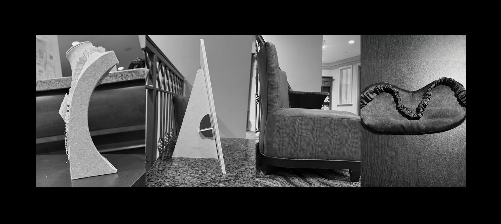
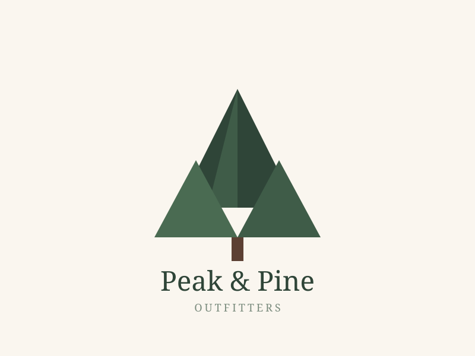

About
Welcome to my personal web portfolio! My name is Bianca, and I am currently pursuing an Associate degree in Digital Media. I am building my creative and technical foundation with the goal of transitioning into user experience design, with a strong interest in interactive media and gaming. Through my coursework, I am learning the fundamentals of front-end web development, visual design, and digital content creation. My background in technical support and my passion for photography give me a practical eye for composition, visual framing, and user interaction. I am currently expanding my hands-on experience with design tools like Photoshop, Illustrator, and Canva as I complete class projects. I am excited to continue building this portfolio as I master new web technologies and design techniques.
Education
- Associate Degree, Digital Media — In progress. Coursework in front-end web development, visual design, and digital content creation, with a focus toward UX design.
Skills
- User Experience Design
- User Interface Prototyping
- Front-End Web Development
- Information Architecture
- Visual Communication
- Digital Photography & Framing
- Customer Experience Research
- Technical Troubleshooting
- Responsive Layout Design
- Creative Problem Solving
Software & Hardware Tools
- Adobe Photoshop
- Adobe Illustrator
- Canva
- GitHub
- Digital Camera / Mobile Camera
Work Samples
Click a thumbnail below to see the full image on its own page.
-

Canva Layout Graphic -

Peak & Pine Logo -

Summer Jazz Night Poster